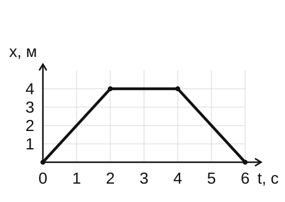
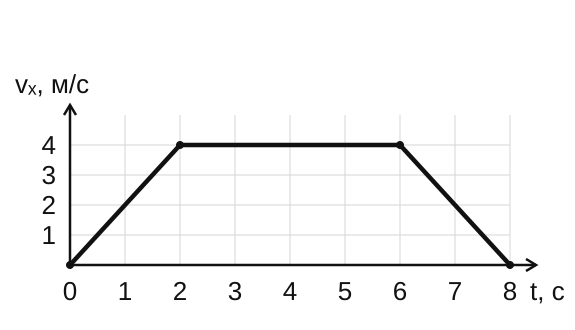
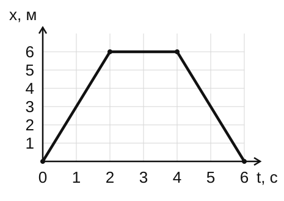
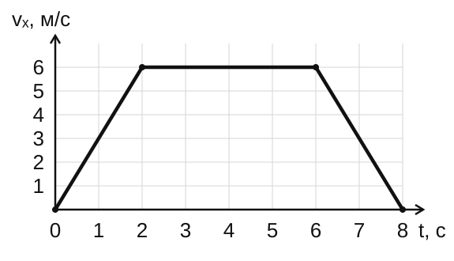

Контрольная работа по теме «Механическое движение. Взаимодействие тел»
Вариант 1
1. Физические понятия — 2 балла
Установите соответствие между понятием и его примером. Для каждой буквы выберите одну цифру.
| Понятие | Примеры |
|---|---|
| А) физическая величина | 1) инерция |
| Б) единица физической величины | 2) ньютон |
| В) измерительный прибор | 3) ускорение |
| 4) динамометр | |
| 5) свободное падение |
Запишите цифры в порядке АБВ.
2. Движение и силы — 1 балл
Шайба скользит по горизонтальному льду. В некоторой модели трением и сопротивлением воздуха можно пренебречь. Каким будет её дальнейшее движение, если толчок уже прекратился?
- Скорость будет равномерно уменьшаться до нуля.
- Скорость будет увеличиваться без действия других тел.
- Шайба будет двигаться прямолинейно с постоянной скоростью.
- Шайба сразу остановится.
Запишите номер верного ответа.
3. График координаты — 1 балл
На рисунке показана зависимость координаты тела от времени. Найдите модуль скорости тела на участке от 4 до 6 с. Ответ запишите в м/с.

4. Равновесие рычага — 1 балл
Лёгкий горизонтальный рычаг находится в равновесии. Слева от оси вертикально вниз действует сила 12 Н, её плечо равно 20 см. Справа от оси вертикально вниз действует сила с плечом 30 см. Найдите модуль силы справа. Ответ запишите в ньютонах. Трением в оси пренебрегите.
5. Изменение физических величин — 2 балла
Небольшой камень отпустили без начальной скорости с высоты 20 м над Землёй. Рассматривайте движение после начала падения и до удара о землю. Как изменяются модуль скорости камня и модуль ускорения свободного падения, если в пределах этой высоты поле тяжести считать однородным?
Для каждой величины выберите:
- увеличивается;
- уменьшается;
- не изменяется.
Запишите две цифры: сначала для модуля скорости, затем для модуля ускорения свободного падения. Цифры могут повторяться.
6. Анализ графика скорости — 2 балла
Тело движется вдоль оси \(Ox\). На рисунке показан график проекции его скорости на эту ось. Выберите два верных утверждения.

- На участке от 0 до 2 с проекция ускорения равна \(2\text{ м/с}^2\).
- Участок равномерного движения длится 2 с.
- За всё показанное время тело проходит путь 20 м.
- На участке от 6 до 8 с тело проходит путь 4 м.
- На участке от 6 до 8 с тело движется против положительного направления оси \(Ox\).
Запишите номера выбранных утверждений в порядке возрастания.
7. Третий закон Ньютона — 2 балла
Книга покоится на горизонтальном столе. Сила тяжести, действующая на книгу, и сила реакции стола равны по модулю и противоположны по направлению. Являются ли они парой сил по третьему закону Ньютона? Объясните ответ. Укажите силу, которая составляет такую пару с силой, действующей со стороны стола на книгу.
8. Пружина, трение и движение — 3 балла
Брусок массой 2 кг начинает двигаться из состояния покоя по горизонтальной поверхности. Его тянут горизонтальной пружиной жёсткостью 200 Н/м. Во время движения удлинение пружины поддерживают постоянным и равным 5 см. Коэффициент трения скольжения бруска о поверхность равен 0,20. Массу пружины не учитывайте, считайте её деформацию упругой.
Найдите ускорение бруска и путь, который он пройдёт за первые 4 с движения. Изобразите силы, действующие на брусок, и запишите уравнение движения.
Вариант 2
1. Физические понятия — 2 балла
Установите соответствие между понятием и его примером. Для каждой буквы выберите одну цифру.
| Понятие | Примеры |
|---|---|
| А) физическая величина | 1) секундомер |
| Б) единица физической величины | 2) деформация |
| В) измерительный прибор | 3) килограмм |
| 4) масса | |
| 5) равномерное движение |
Запишите цифры в порядке АБВ.
2. Движение и силы — 1 балл
Тележка движется по горизонтальному прямолинейному участку. Сумма всех действующих на неё сил равна нулю. Какое утверждение верно в системе отсчёта, связанной с Землёй и считаемой инерциальной?
- Тележка может двигаться только с уменьшающейся скоростью.
- Тележка движется прямолинейно с постоянной скоростью.
- Тележка обязательно останавливается.
- Тележка движется с увеличивающейся скоростью.
Запишите номер верного ответа.
3. График координаты — 1 балл
На рисунке показана зависимость координаты тела от времени. Найдите модуль скорости тела на участке от 4 до 6 с. Ответ запишите в м/с.

4. Равновесие рычага — 1 балл
Лёгкий горизонтальный рычаг находится в равновесии. Слева от оси вертикально вниз действует сила 15 Н, её плечо равно 20 см. Справа от оси вертикально вниз действует сила с плечом 50 см. Найдите модуль силы справа. Ответ запишите в ньютонах. Трением в оси пренебрегите.
5. Изменение физических величин — 2 балла
Небольшой мяч бросили вертикально вверх с поверхности Земли со скоростью 10 м/с. Рассматривайте движение после отрыва от руки и до достижения верхней точки. Как изменяются модуль скорости мяча и модуль ускорения свободного падения, если в пределах высоты подъёма поле тяжести считать однородным?
Для каждой величины выберите:
- увеличивается;
- уменьшается;
- не изменяется.
Запишите две цифры: сначала для модуля скорости, затем для модуля ускорения свободного падения. Цифры могут повторяться.
6. Анализ графика скорости — 2 балла
Тело движется вдоль оси \(Ox\). На рисунке показан график проекции его скорости на эту ось. Выберите два верных утверждения.

- На участке от 0 до 2 с проекция ускорения равна \(3\text{ м/с}^2\).
- Участок равномерного движения длится 4 с.
- За всё показанное время тело проходит путь 30 м.
- На участке от 6 до 8 с тело проходит путь 12 м.
- На участке от 6 до 8 с тело движется против положительного направления оси \(Ox\).
Запишите номера выбранных утверждений в порядке возрастания.
7. Третий закон Ньютона — 2 балла
Груз неподвижно висит на вертикальной нити. Сила тяжести, действующая на груз, и сила натяжения нити равны по модулю и противоположны по направлению. Являются ли они парой сил по третьему закону Ньютона? Объясните ответ. Укажите силу, которая составляет такую пару с силой, действующей со стороны нити на груз.
8. Пружина, трение и движение — 3 балла
Брусок массой 3 кг начинает двигаться из состояния покоя по горизонтальной поверхности. Его тянут горизонтальной пружиной жёсткостью 300 Н/м. Во время движения удлинение пружины поддерживают постоянным и равным 6 см. Коэффициент трения скольжения бруска о поверхность равен 0,20. Массу пружины не учитывайте, считайте её деформацию упругой.
Найдите ускорение бруска и путь, который он пройдёт за первые 3 с движения. Изобразите силы, действующие на брусок, и запишите уравнение движения.